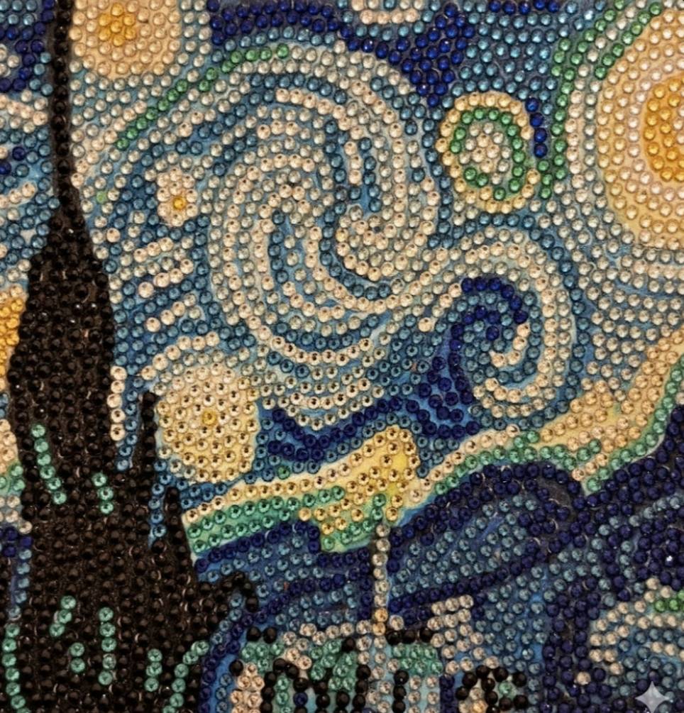
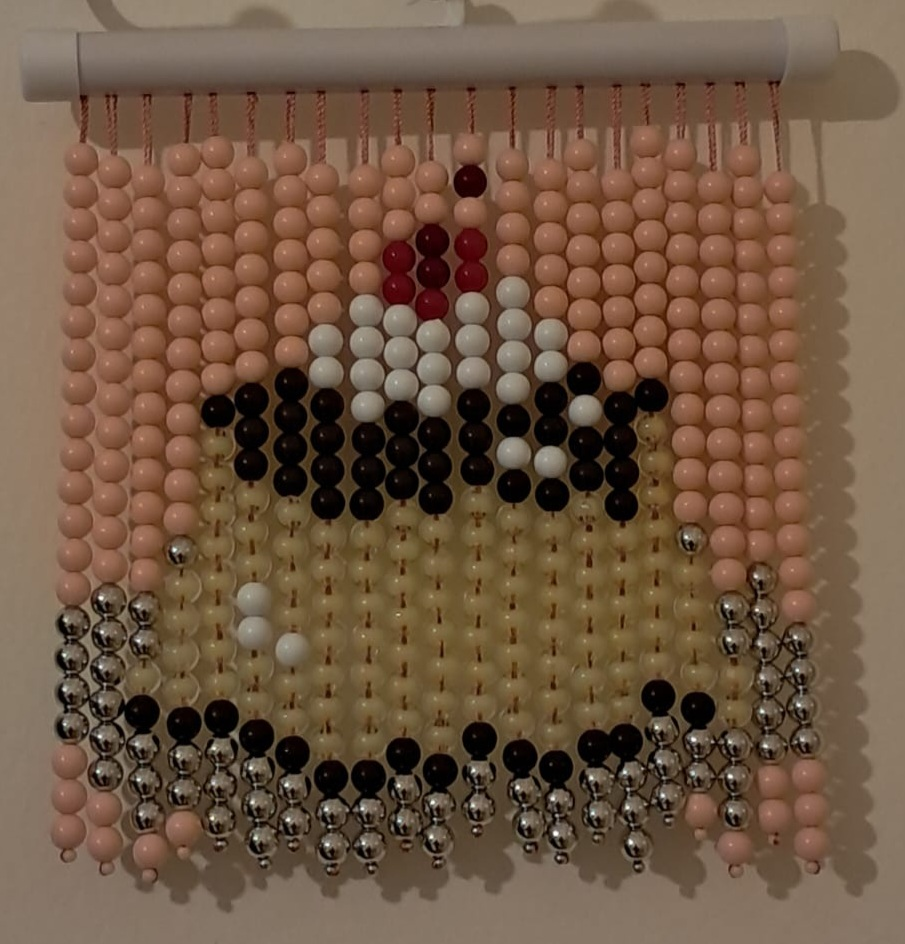
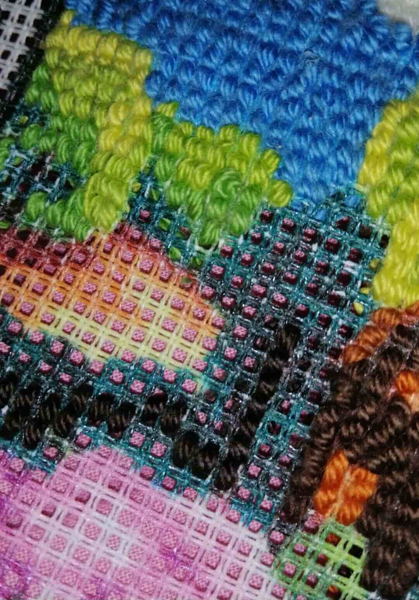
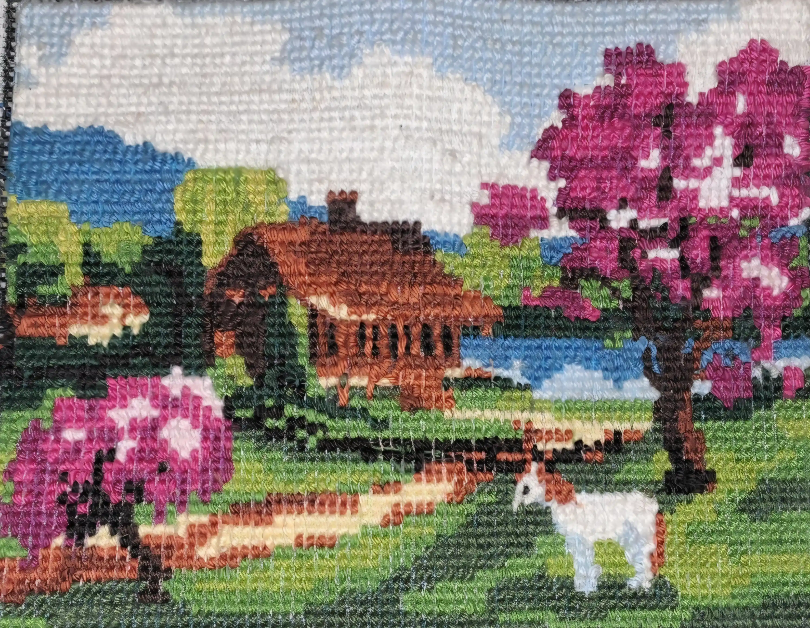
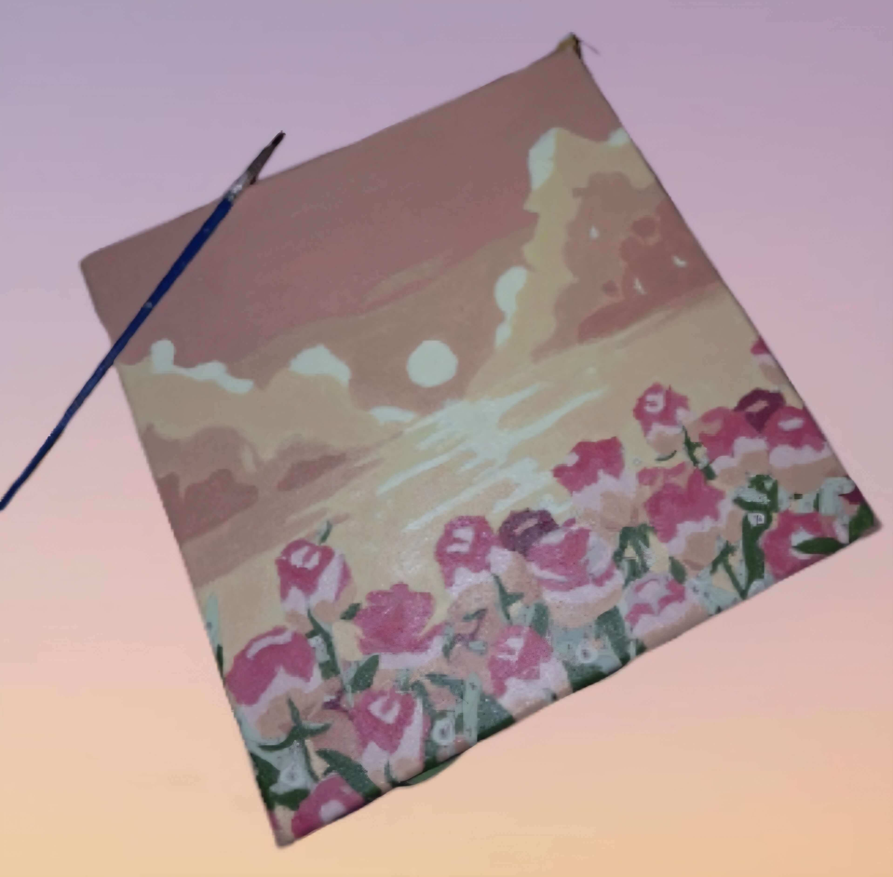
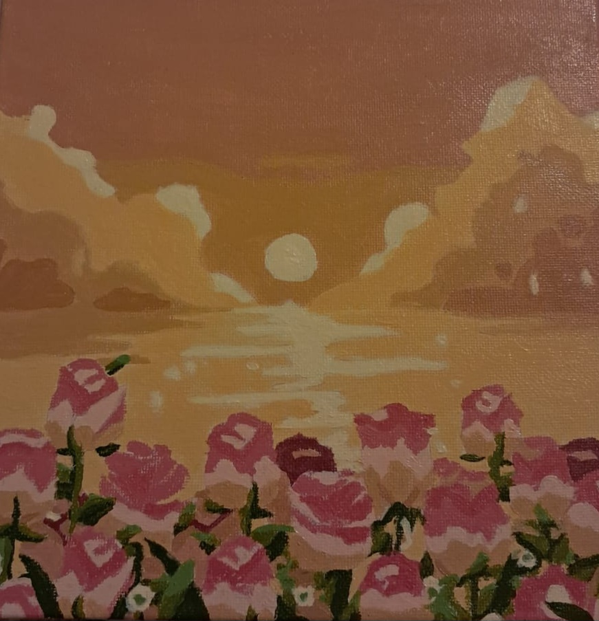
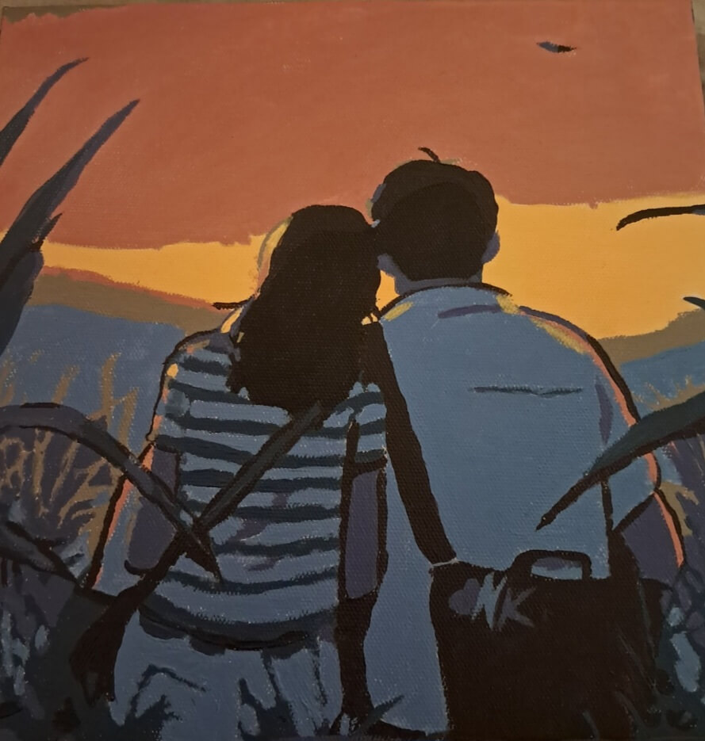
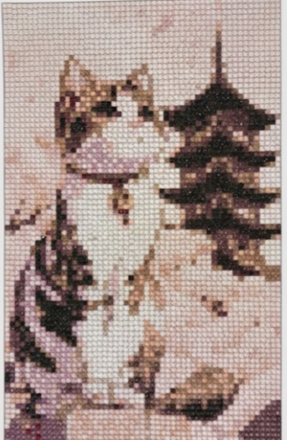
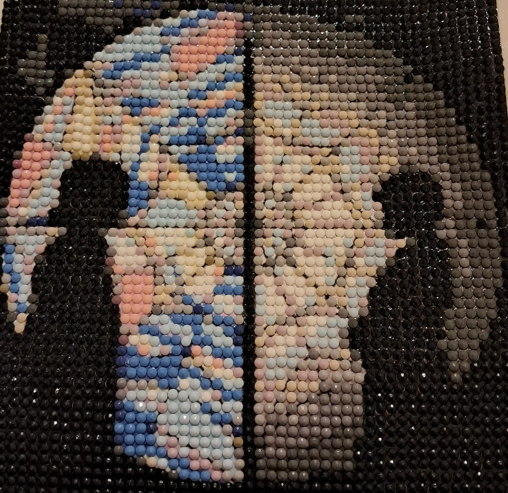
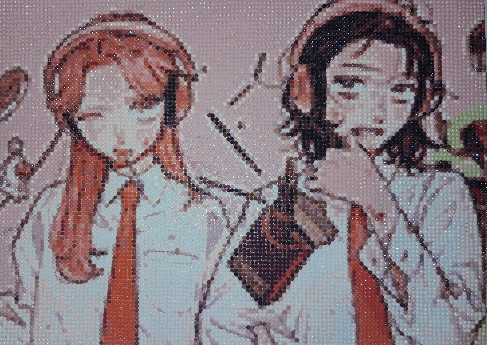

This website is a personal exploration of all the hobby ideas that people can do during stressful times. They are simple and repetitive, although they might be time-consuming. In our fast-paced world, it’s important to indulge in hobbies that can bring moments of peace into our lives. For people who struggle with overthinking, I've discovered a path to mindfulness and peace, where nothing matters other than focusing on these tiny details. Each hobby requires minimal mental effort but offers therapy through relaxation. This space documents my journey with working on these crafty projects, and celebrates the beauty of doing something just for the sake of doing it, without pressure or perfection.
About This Project
My Stress-Relief Hobbies
💎 Diamond Painting
Diamond painting has become one of my favorite evening meditations. The process includes picking up tiny colored diamonds with a sticky pen and placing them onto a sticky canvas according to a color-coded pattern, so you'll be painting with diamonds instead of oil paint, and it looks like a beautiful, shiny mosaic.
I work on different sizes of canvases, some are as small as 20x20 cm, and others are up to 30x40 cm. Small canvases may take a couple of days or even a few hours to complete, while I work on larger canvases over the course of several weeks. There's no rush, no deadline. The project slowly starts to shimmer. When light hits the finished piece, it sparkles beautifully, a reminder of all those quiet hours spent creating something with my own hands, placing hundreds of diamonds a day.
What I love most about this process is that it’s demanding of my attention but not mentally taxing, it keeps anxious thoughts at bay while still engaging the painter, and my hands move in a rhythm of picking, placing, and pressing. I usually listen to podcasts or watch shows. That's how easy it is to work on it, and my satisfaction comes from hearing each bead snap in place, plus watching the painting as it begins to take a clear shape.

This hobby also requires organization. Each color has its own numbered packet, and I usually have to sort them into small plastic containers. Finishing a section feels like a small victory, and completing an entire canvas is immensely satisfying without being stressful.
✨ Bead Curtain Art
I stumbled upon the hobby of stitching bead curtains almost accidentally while watching reels and also on pinterest, it looked easy and enough to do without requiring much time to complete it. In this process, you string colorful beads onto a thread or fishing line according to certain patterns, then hang them to create a flowing and decorative curtain

This hobby is also calming and repetitive, although it requires some focus to follow the pattern and color choices. I'll have to count the colors and beads before stringing them into the line, and I’ll usually have the pattern sheet in front of me. Hours pass while working without me realizing it.

It’s so satisfying to feel the weight of the strand growing in my hands, the rhythmic flow of selecting the beads and threading them is hypnotic. Aside from counting the beads, this process is so easy to follow. The sound of the beads clicking together is so pretty, and when hung in a window or on a wall, it transforms the space, adding color and creates beautiful patterns to add on walls or by the shelf, it feels so fulfilling to complete these projects while you can stay relaxed.
🧶 Crochet Canvas Art
I discovered crocheting canvases when I was 15 years old whilst on a quest to fill my time with an artistic hobby during summer, safe to say I only crocheted a part of it and stopped for many years until I picked it up again in college, it’s important to appreciate the process itself without focusing too much on the end results.

The canvas itself comes with the colors and the picture printed on it but and you have to lace the yarn through the holes with a needle, unlike traditional art forms where mistakes can be difficult to fix, in this canvas you can unravel your work if you don't like how it looks, and simply start again, the only troubling part is that the leftover yarn at the back can get tangled, the solutions are endless, you can tape it or try to cut it out so it can look neat again.
This hobby requires enough focus to see where you're lacing the yarn, and to figure out new shapes to stitch, but it’s repetitive enough to relax the mind and allow for meditation. My hands start to know the motions well after some time, I can crochet while watching movies at my house or sitting in waiting rooms, the project is small enough to carry around.

The finished product is so pretty to display on walls, it gives your home the coziness it needs, and you can exclaim proudly that you created this artwork, and remember each stitch’s memories. For the completed artwork to be a collection of thousands of tiny meditative moments woven together.
🎨 Paint-By-Numbers
Paint-by-numbers might seem childish to some, but for me, it's the perfect stress-free way to engage with painting without the pressure of creating something from scratch. Each kit comes with a pre-printed canvas marked with numbers, corresponding paints, and brushes. All I have to do is match numbers to colors and fill in the spaces.

What I love about this hobby is how it removes all creative decision-making. I don't have to think about composition, color theory, or technique. The artwork is already designed, I'm simply bringing it to life, one numbered section at a time. I've always found painting a bit difficult for me to figure out, so this makes it perfect for evenings when I want to be creative, but my brain is too tired for original thought.
I typically try to work through the painting by a specific chosen color, completing all sections of one number before moving to the next. It starts to transform wonderfully. At first, the painting looks like random colored patches, but gradually, as more sections are filled in, the image emerges like magic. There's something deeply satisfying about the precision required. Staying within the lines, making sure the coverage is even, blending edges where colors meet, these small technical challenges keep me focused without being stressful.

When I finish a painting, I'm always amazed at how professional it looks. It's tangible proof that I can create beautiful art, even on days when I don't feel particularly creative or capable. Each completed canvas is a reminder that sometimes following simple instructions step by step can lead to something wonderful. I've also completed a painting as a housewarming gift for my friend, she still has it mounted in her house, which proves that this can be amazing as a gift, they get to appreciate your effort, and you’ll love the process of it and feel proud.
How These Hobbies Help With Stress
- The repetitive motion calms our nervous system.
- No deadlines or pressure to create something perfect.
- You get instant mini-rewards from completing sections.
- They redirect stress into creation.
- The final product becomes physical proof of your calm moment, something you can touch and admire.
- They ground you in the present moment.
- You can multitask instead of only watching a show or listening to a podcast.
"To practice any art, no matter how well or badly, is a way to make your soul grow." — Kurt Vonnegut.
Gallery






Final Thoughts
Sometimes the most helpful way to take care of our mental health is to sit quietly and busy our hands with creation, and bask in the joy of making it. Grappling with the need to always be productive made me feel like life is rushing by. But rest and creativity can coexist. If you're feeling overwhelmed, I encourage you to find your own meditative craft.
If you need relaxing (or entertaining) recommendations, here are mine:
For true crime lovers, try Rotten Mango by Stephanie Soo or her storytelling podcast Moral of the Story
If you want something soft and comforting, Studio Ghibli background videos
For a quiet, cozy atmosphere, I love Animal Crossing study/library ambiences .
And if you prefer pure calm, rainy day ambiences, forest sounds, or lo-fi playlists.
Contact & Credits
All pictures are taken by me.